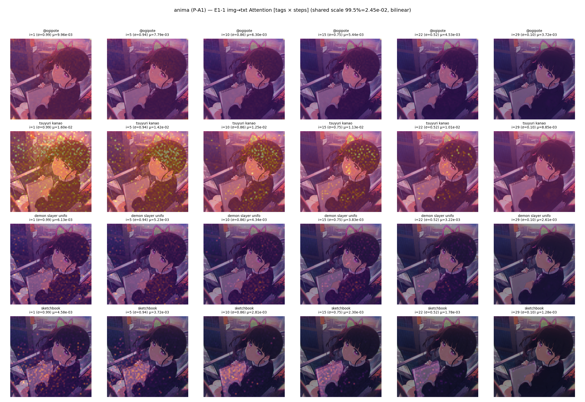
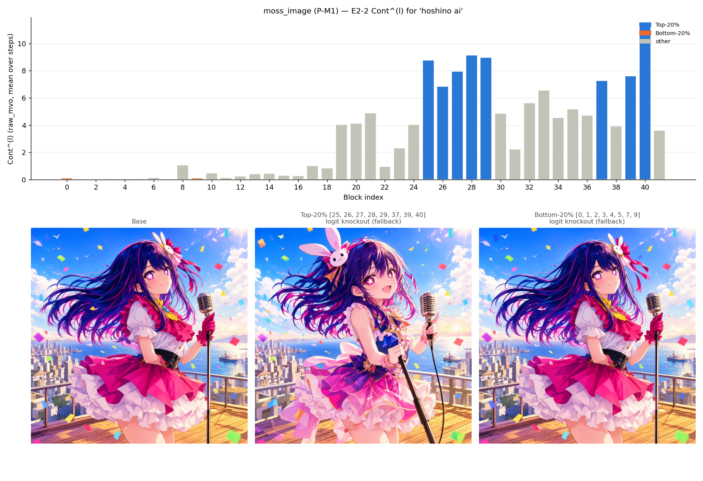
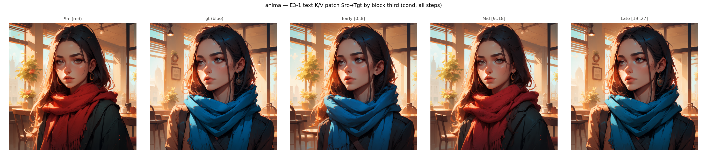

4가지 핵심 기능
클릭하면 이미지를 확대할 수 있습니다.

1. Attention Heatmap
토큰별 Attention 분포 시각화
토큰별 Attention 분포 시각화

2. Layer Selection
핵심 DiT 블록 선별 (Top-20% vs Bottom-20%)
핵심 DiT 블록 선별 (Top-20% vs Bottom-20%)

3. Tag Influence
K/V Patching · Logit Knockout · TACA 개입
K/V Patching · Logit Knockout · TACA 개입

4. MI Verification
Template Token 분리 · Gate Ablation 검증
Template Token 분리 · Gate Ablation 검증